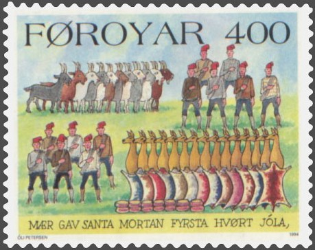

TWELVE DAYS OF CHRISTMAS
LES DOUZE JOURS DE NOËL
An Anglo-Saxon counting song (Rout 68)
Comptine anglaise (Rout 68)
TuneArrangement Ch. Souchon (c) 2008
Sung by Bing Crosby & the Andrews Sisters

|
On the first day of Christmas, my true love sent to me A partridge in a pear tree. On the second day of Christmas, my true love sent to me Two turtle doves, And a partridge in a pear tree. On the twelfth day of Christmas, my true love sent to me : 12 Twelve drummers drumming, 11 Eleven pipers piping, 10 Ten lords a-leaping, 9 Nine ladies dancing, 8 Eight maids a-milking, 7 Seven swans a-swimming, 6 Six geese a-laying, 5 Five golden rings, 4 Four calling birds, 3 Three French hens, 2 Two turtle doves, 1 And a partridge in a pear tree. |
Le 1er jour de Noël, mon ami m'a fait tenir Une perdrix sur un pêcher. Le second jour de Noël, mon ami m'a fait tenir Deux tourterelles, Une perdrix sur un pêcher. Le 12ème jour de Noël, mon ami m'a fait tenir: 12 douze joueurs de trompette, 11 onze sonneurs de musette 10 dix seigneurs dui galopent 9 neuf dames qui gavottent 8 huit filles qui papotent 7 sept cygnes qui barbotent 6 six oisons qui radotent 5 cinq anneaux tout en or 4 quatre oiseaux qui pérorent 3 trois poulardes de France 2 deux tourterelles 1 une perdrix sur un pêcher |

Note
|
Genesis of the song "The Twelve Days of Christmas" is an English Christmas carol (Roud # 68) which enumerates a series of increasingly grandiose gifts given on each of the "Twelve days of Christmas". It is a cumulative song, meaning that each verse is built on top of the previous verses. It has been one of the most popular and most-recorded Christmas songs in America and Europe throughout the past century. The "Twelve Days" in the song are the twelve days starting with Christmas Day to the day before Epiphany (6 January), "Twelfth Night" being defined as "the evening of January 5th, the day before Epiphany, which traditionally marks the end of Chritmas celebrations". (Oxford English Dictionary) The date of the song's first performance is not known, though it was used in European and Scandinavian traditions as early as the 16th century. In the early 20th century, Frederic Austin wrote an arrangement where he added his melody from "Five gold(en) rings" onwards (The New Oxford Book of Carols), which has since become standard. "The Twelve Days of Christmas" is a children's rhyme that was originally published in a book called Mirth without Mischief in London around 1780. It was originally a memory and forfeit game and it was played by gathering a circle of players and each person took it in turns to say the first line of the rhyme. When it is the first player's turn again he says the second line of the verse and so on. Years later the game and rhyme were adopted by Lady Gomme (an English collector of folktales and rhymes) as a rhyme that "the whole family could have fun singing every twelfth night before Christmas before eating nine pies and twelve cakes". Structure and tune "The Twelve Days of Christmas" is a cumulative song, meaning that each verse is built on top of the previous verses. There are twelve verses, each describing a gift given by "my true love" on one of the twelve days of Christmas. The time signature of this song is not constant, unlike most popular music. The introductory lines, such as "On the twelfth day of Christmas, my true love gave to me", are made up of two 4/4 bars, while most of the lines naming gifts receive one 3/4 bar per gift with the exception of "Five gold(en) rings", which receives two 4/4 bars, "Two turtle doves" getting a 4/4 bar with "And a" on its 4th beat and "Partridge in a pear tree" getting two 4/4 bars of music. In most versions, a 4/4 bar of music immediately follows "Partridge in a pear tree." "On the" is found in that bar on the 4th (pickup) beat for the next verse. The successive bars of 3 for the gifts surrounded by bars of 4 give the song its hallmark "hurried" quality. One peculiar aspect about this song is how the second through fourth verses use a different melody for the second through fourth items than in the fifth through 12th verses. Before the song gets to the "five golden rings," the melody, using solfege, is "sol re mi fa re" for the fourth through second items, as later found in the last verses for the 12th through sixth items. In the sixth through 12th verses, the melody for the fourth through second items is as shown above in the insert. Variants, ultimate French origin and other particulars There are many variations of this song in which the last four objects are arranged in a different order (for example twelve lords a-leaping, eleven ladies (or dames a-) dancing, ten pipers piping, nine drummers drumming). At least one version has "ten fiddlers fiddling." Still another version alters the fourth gift to "four mockingbirds." There are some regional variants of the verb in the opening line of each verse. In the United States the true love "gave" the gifts to the singer. In the British version, the true love "sent" the gifts to the singer. The English song collector Anne Gilchrist (1863-1954) observed in 1916 (Sharp, Gilchrist and Broadwood, p.280) that "from the constancy in English, French and Languedoc versions of the merry little partridge, I suspect thar "pear-tree" is really "perdrix" carried into England". The variant text "part of a juniper tree", found as early as 1840, is probably a corruption of "partridge in a pear tree" (Anne Gilchrist suggests it could have been "joli perdrix", pretty partridge). The British folklorists Iona (1923-2017) and Peter (1918-1982) Opie state that "if the partridge in a pear tree is to be taken literally, it looks as if the chant comes from France, since the Red Leg partridge, which perches in trees more frequently than the common partridge, was not successfully introduces into England until about 1770." In the context of a discussion of the Breton song "The Vespers of the Frogs" it is of interest that the musicologist Cecil James Sharp (1859-1924) should report (Sharp, 1905) that, instead of "three French hens" one singer sings "Britten chains", which he interprets as a corruption of "Breton hens". The American writers William and Ceil Baring-Gould also suggest (in "The Annotated Mother Goose", 1962) that the birds are Breton hens, which they see as another indication that the carol is of French origin. The song spread into England from the Newcastle-upon-Tyne region where this Christmas carol was printed several times, in the form of broadsides, between 1714 and 1864 (Henry Husk, "Songs of Nativity", 1864, pp. 181-185). T=m3/6+m²/2+m/3. With m=12, we obtain 364 gifts, or, practically, 1 gift per day! |
Genèse du chant "Les douze jours de Noël" sont un chant de Noël anglais (index Roud N°68) où sont énumérés un nombre croissant de cadeaux magnifiques offerts chacun des "douze jours de Noël". C'est un chant à récapitulation, où chaque strophe répète toutes les précédentes et y ajoute un élément qui lui est propre. Ce fut l'un des chants de Noël le plus souvent enregistrés en Amérique et en Europe au cours du siècle passé. Les « Douze Jours » de la chanson sont les douze jours commençant le jour de Noël jusqu'à la veille de l'Épiphanie (6 janvier), la « Douzième Nuit » étant définie comme « la soirée du 5 janvier, la veille de l'Épiphanie, qui marque traditionnellement la fin des célébrations de Noël". (Dictionnaire anglais d'Oxford) La date à laquelle ce chant a été chanté en public pour la première fois n'est pas connue, bien que l'on en connaisse des équivalents dans la tradition scandinave et européenne dès le 16ème siècle. Au début du XXème siècle, Frédéric Austin composa un arrangement à partir de la mélodie des "Cinq anneaux d'or" (tirée du "Nouveau recueil de chants de Noël d'Oxford"). Cette mélodie est devenue l'air de référence pour ce chant. "Les douze jours après Noël" est une comptine publiée pour la première fois dans un livre intitulé "S'amuser sans faire de bêtises", à Londres, vers 1780. C'était à l'origine un jeu de gages destiné à exercer la mémoire. Les joueurs se mettaient en cercle et chacun, à tour de rôle, disait le premier vers de la comptine. Quand le tour revenait au premier joueur, il disait le second vers du couplet et ainsi de suite. Des années plus tard, le jeu et la comptine furent présentés par Lady Gomme (collectrice anglaise de contes et comptines) comme une pièce que "le cercle de famille" prendra plaisir à chanter chacune des douze veillées précédant Noël avant de déguster neuf tartes et douze gâteaux". Structure et mélodie Les "Douze jours après Noël" sont, on l'a dit, une comptine à récapitulation qui comporte douze couplets, dont chacun décrit une étrenne offerte par "mon cher amour", l'un desdits "douze jours après Noël". La mesure de ce chant n'est pas constante, à la différence de la plupart des airs les plus populaires. Les refrains introductifs, tels que "le douzième jour après Noël, mon cher amour m'a offert", se composent de 2 mesures à 4/4, tandis que la plupart des couplets qui énumèrent les étrennes se chantent sur un rythme 3/4, à l'exception de "Cinq anneaux d'or" (4/4), "Deux tourterelles" (4/4 le dernier temps étant prolongé pour inclure le "et une" et le finale "Perdrix dans un poirier" (deux mesures à 4/4). Dans la plupart des versions, une mesure à 4/4 suit immédiatement la phrase "Perdrix dans un poirier". "Et le" prolonge, dans cette mesure, le 4ème temps (transition) qui introduit le couplet suivant. Les mesures à 3 temps qui se suivent (liste des cadeaux) entourées de mesures à 4 temps confèrent au chant son allure "enlevée". Une caractéristique de ce chant est d'utiliser pour les couplets 3 à 4 une mélodie différente, pour les articles 3 à 4, de celle utilisée pour les couplets 5 à 12. Avant qu'on arrive aux "cinq anneaux d'or", la mélodie est "sol ré mi fa ré", (en utilisant le système "solfège"), pour les articles 4 à 2, que l'on retrouvera plus tard dans les derniers couplets pour les articles 12 à 6. Dans les couplets 6 à 12, la mélodie pour les articles 4 à 2 est celle indiqué dans l'encart. Variantes, origine française et autres spécificités Il existe de nombreuses variantes de ce chant dans lesquelles les 4 derniers articles sont cités dans un ordre différent (par exemple - douze messieurs qui sautent, onze ladies qui (ou dames qui) dansent, dix fifres qui fifrent, neuf tambours qui tambourinent. On trouve au moins une version avec "dix violoneux qui viellent". Et une autre où le 4ème cadeau devient "4 mocking birds" (passereaux américains). Il existe certaines variantes régionales portant sur les verbes des refrains d'appel de chaque couplet. Aux Etats-Unis, le cher amour "a donné" les étrennes au chanteur. Dans les versions anglaises, il les lui a "envoyées". La collectrice de chants anglais Anne Gilchrist (1863-1954) observait en 1916 (Sharp, "Gilchrist and Broadwood", p.280) que "compte tenu de l'omniprésence dans les versions anglaises, françaises et occitanes de la joyeuse "perdriole", je soupçonne que le "poirier" est en réalité une "perdrix" importée en Angleterre". La variante "part of a juniper tree" (partie d'un genévrier), notée en 1840, est probablement une corruption de "partridge in a pear tree" (perdrix dans un poirier). (Anne Gilchrist soupçonne que ce 'juniper tree', genévrier, pourrait être en réalité une "jolie perdrix"). Les folkloristes britanniques Iona (1923-2017) et Peter (1918-1982) Opie affirment que « si l'on doit prendre au sens littéral la 'perdrix dans un poirier', il apparaît que le chant vienne de France, puisque la perdrix à pattes rouges, qui se perche plus fréquemment dans les arbres que la perdrix commune, na été introduite avec succès en Angleterre que vers 1770. » Dans le cadre d'une discussion du chant breton "Les vêpres des grenouilles", il est intéressant de noter que le musicologue Cecil James Sharp (1859-1924) rapporte (Sharp, 1905) qu'au lieu de "three French hens" un chanteur prononce "Britten chains", qu'il interprète comme une corruption de "Breton hens", poules bretonnes. Les écrivains américains William et Ceil Baring-Gould suggèrent également (dans "The Annotated Mother Goose", 1962) que les oiseaux sont des poules bretonnes, ce qu'ils considèrent comme un indice supplémentaire en faveur de l'origine française de ce chant. Le chant s'est diffusé en Angleterre à partir de la région de Newcastle-upon-Tyne où ce chant de Noël fut imprimé à plusieurs reprises, sous forme de feuilles volantes (broadsides), entre 1714 et 1864 (Henry Husk, "Songs of Nativity", 1864, pp. 181-185). Avec m=12, on obtient 364 cadeaux, soit, pratiquement, 1 par jour! |
|
A similar cumulative verse from SCOTLAND, "The Yule Days", may be likened to "The Twelve Days of Christmas". It has thirteen days rather than twelve, and the number of gifts does not increase in the manner of "The Twelve Days". Here is the final verse: The king sent his lady on the thirteenth Yule day, 13 Three stalks o' merry corn, 12 Three maids a-merry dancing, 11 Three hinds a-merry hunting, 10 An Arabian baboon, 9 Three swans a-merry swimming, 8 Three ducks a-merry laying, 7 A bull that was brown, 6 Three goldspinks, 5 Three starlings, 4 A goose that was grey, 3 Three plovers, 2 Three partridges, 1 A pippin-go-aye; Wha learns my carol and carries it away? "Pippin go aye" (also spelled "papingo-aye" in later editions) is a Scots word for "parrot". |
Une comptine cumulative du même genre provenant d'ÉCOSSE, "The Yule Days", peut être comparée aux "Douze Jours de Noël". Elle porte sur treize jours au lieu de douze, et le nombre de cadeaux n'augmente pas comme dans les "douze jours". Voici le couplet final : Le roi envoya à sa dame le treizième jour de Noël: 13 Trois joyeuses tiges de maïs, 12 Trois joyeuses servantes qui dansent, 11 Trois joyeuses biches pour la chasse, 10 Un babouin arabe, 9 Trois joyeux cygnes qui nagent, 8 Trois joyeuses canes qui pondent, 7 Un taureau brun, 6 Trois bouvreuils, 5 Trois étourneaux, 4 Une oie grise, 3 Trois pluviers, 2 Trois perdrix, 1 Un papegeai. Qui veut apprendre mon chant et l'emporter ? "Pippin go aye" (parfois orthographié "papingo-aye") est un mot écossais pour "perroquet". |
|
Welsh and Cornish verses In Wales, the publisher D. Roy Sear published ("CaneuonLlfar Gwlad -Songs from oral tradition", Cardiff, 1974, p.39) this song, which seems mainly (but not exclusively) translated from "Twelve Days" :
There is also a "bird passing in a pear tree" in this British Cornish nursery rhyme published in 1910 by I. Gundry: "Canow Kernow. Songs and Dances from Cornwall", 1966, p.37-39. Cornish ceased to be spoken around 1815. This version was collected by H.B. Piggott from the singing of James Alexander Osborne at Treliske in Cornwall around 1910! As the French songster-poet Charles Trenet sang, "Long after the poets have disappeared their ditties still linger in the streets..." The same saying applies, it seems, to languages.
These Welsh and Cornish versions of the "Twelve days" present certain motifs from the Breton "Gosperoù ar Raned" and sometimes in almost the same place in the listing: bulls, ships, horses, various birds including swans and the golden rings. The Welsh word "swllt" refers to "shilling" and means "cow". It has the same origin as the Breton saout (from the Latin sol(i)dus which gave sou in French). Saout is the plural of buoch = cow which is almost systematically found in Gosperoù. The Cornish "carow", Breton "karv" may have been replaced by homophony by the motif of "carts" (Breton "karr") in the Breton poem. Iceland has a Christmas tradition where "Yule Lads" put gifts in the shoes of children for each of the 13 nights of Christmas. In the Faroe Islands, there is a comparable counting Christmas song. The gifts include: one feather, two geese, three sides of meat, four sheep, five cows, six oxen, seven dishes, eight ponies, nine banners, ten barrels, eleven goats, twelve men, thirteen hides, fourteen rounds of cheese and fifteen deer. These were illustrated in 1994 by local cartoonist Óli Petersen (born 1936) on a series of two stamps issued by the Faroese Philatelic Office. Sweden In Blekinge and Småland, southern Sweden, a similar song was also sung. It featured one hen, two barley seeds, three grey geese, four pounds of pork, six flayed sheep, a sow with six pigs, seven åtting grain, eight grey foals with golden saddles, nine newly born cows, ten pairs of oxen, eleven clocks, and finally twelve churches, each with twelve altars, each with twelve priests, each with twelve capes, each with twelve coin-purses, each with twelve thaler inside. General remark According to The Oxford Dictionary of Nursery Rhymes: "Suggestions have been made that the gifts have significance, as representing the food or sport for each month of the year. Importance has long been attached to the Twelve Days: the weather on each day was carefully observed to see what it would be in the corresponding month of the coming year. Nevertheless, whatever the ultimate origin of the chant, it seems probable [that] the lines that survive today both in England and France are merely an irreligious travesty." Retrieved from "http://en.wikipedia.org/wiki/The_Twelve_Days_of_Christmas_%28song%29" |
 Faroe Islands stamp by cartoonist Öli Petersen (1994) |
Comptines galloise et cornique Au pays de Galles, l'éditeur D. Roy Sear a publié ("CaneuonLlfar Gwlad -Songs from oral tradition", Cardiff, 1974, p.39) ce chant, qui semble principalement (mais pas uniquement) traduit des "Twelve Days":
Il est aussi question d'un "oiseau qui passe dans un poirier" dans cette comptine de Cornouailles britanniques publiée en 1910 par I. Gundry: "Canow Kernow. Songs and Dances from Cornwall", 1966, p.37-39. Le cornique a cessé d'être parlé vers 1815. Cette version a été collectée par H.B. Piggott auprès de James Alexander Osborne à Treliske en Cornouailles vers 1910! Comme le chantait Charles Trenet "Longtemps après que les poètes ont disparu leurs chansons traînent encore dans les rues..." Le même dicton vaut, semble-t-il, pour les langues.
Ces versions galloises et cornouaillaises des "Twelve days" présentent certains motifs des "Gosperoù ar Raned" bretons et parfois presque à la même place dans l'énumération: taureaux, vaisseaux, chevaux, oiseaux divers dont les cygnes et les anneaux d'or. Le mot gallois "swllt" désigne le "shilling" et signifie "vache". Il a la même origine que le breton "saout" (du latin "sol(i)dus" qui a donné en français "sou"). "Saout" est le pluriel de "buoc'h"=vache qui se rencontre presque systématiquement dans les "Gosperoù". Le cornique "carow", breton "karv" a pu être remplacé par homophonie par le motif des "charrettes" (breton "karr") dans le poème breton. Islande Il existe une tradition de Noël selon laquelle les "Garçons de Yule" (Noël) mettent des cadeaux dans les souliers des enfants chacune des 13 nuits de Noël. Dans les îles Féroé, on chante une chanson de Noël semblable au chant anglais. Les cadeaux comprennent : une plume, deux oies, trois côtelettes, quatre moutons, cinq vaches, six bufs, sept plats cuisinés, huit poneys, neuf bannières, dix tonneaux, onze chèvres, douze hommes, treize peaux, quatorze tranches de fromage et quinze cerfs. On les trouve, illustrés en 1994 par le caricaturiste Óli Petersen (né en 1936), sur une série de deux timbres émis par la Direction de la philatélie des îles Féroé. Suède Dans les comtés de Blekinge et de Småland, dans le sud de la Suède, on chantait autrefois une chanson similaire. Elle mentionnait une poule, deux graines d'orge, trois oies grises, quatre livres de porc, six moutons écorchés, une truie avec six porcelets, sept graines d'"aotting", huit poulains gris à selle dorée, neuf veaux nouveau-nés, dix paires de bufs, onze horloges, et enfin: douze église ayant chacune douze autels ayant chacun douze prêtres possédant chacun douze soutanes munies chacune de douze porte-monnaie contenant chacun douze thalers... Remarque générale Selon l'"Oxford Dictionary of Nursery Rhymes" : « Des suggestions ont été faites selon lesquelles les cadeaux ont une signification, en tant qu'ils représentent la nourriture ou le sport pour chaque mois de l'année. Une grande importance a longtemps été attachée aux "Douze Jours" : La météo de chacune de ces journées était soigneusement observée pour savoir quel temps il ferait le mois correspondant de l'année à venir. Néanmoins, quelle que soit l'origine première de ce chant, il semble probable que les couplets qui survivent aujourd'hui en Angleterre et en France n'en sont qu'une parodie irrévérencieuse." Traduit de "http://en.wikipedia.org/wiki/The_Twelve_Days_of_Christmas_%28song%29" |
Voici des liens qui ouvrent sur des chants et sujets apparentés:
Here are links to related songs and topics:
Pater noster (Chant parodique breton / a Breton parodic Song)
"Les douze jours de l'année" ("Perdrioles" de Flandre et de Cambrésis / "Partridge songs" of Flanders and Cambresis)
De Twaelf Getallen (Chant de foi de Flandres / a Flemish Song of faith)
The twelve Days of Christmas ("Perdrioles"anglaise, écossaise, cornique... / English, Scottish, Cornish "Perdrioles")
Green grow the rushes O (Comptine anglaise - an English Counting rhyme)
Ehad mi yodéa (Chant de foi hébreu/ Jewish Song of Faith)
Calendrier de Coligny
The Calendar of Coligny
Apollon & Heraclius
Mahabharata & Gosperoù ar Raned
Noms des mois / Names of the months
Les Séries (Vêpres des grenouilles)